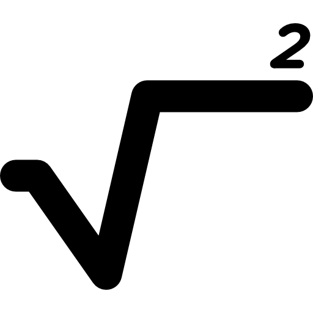
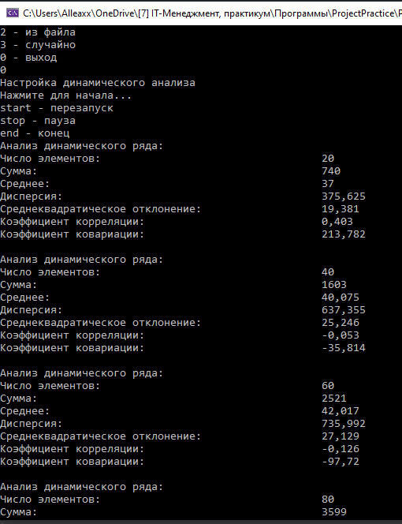

Приложение Анализ++
Программа для статистического анализа данных
О приложении
Приложение Анализ++ - консольное приложение для вариационного и корреляционного анализа числовых рядов. Включает в себя расчет среднего арифметического, дисперсии, среднеквадратического отклонения и множество других показателей.
Преимущества
Лаконичный интерфейс
Удобный ввод
Быстрая работа алгоритма
Поддержка динамического анализа
Загрузка
Версия от: 16 января 2021 года
Последние новости
16 января 2021: Был сделан отчет о проекте перед инвесторами
16 января 2021: Был сделан сайт проекта, где можно скачать демо-версию
15 января 2021: После новогодних праздников команда вернулась к работе